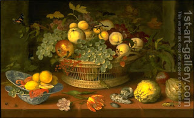

Gittin 48 - First Fruit
When a man brings first fruit to the priest, but does not own the land on which they grew, should he say the thanksgiving? Yes, because when he brings his wife's fruit, he says thanksgiving, and this is the rule. No, because his wife's fruit are exception from the rule.
When a Jubilee (50th) year is in force, any land sold in the interim reverts to the owner in the Jubilee year. Therefore, two brothers inheriting land rent from each other till the Jubilee year. They can bring first fruit only according to the "Yes" answer above.
Still Life with a Basket of Fruit by Balthasar Van Der Ast